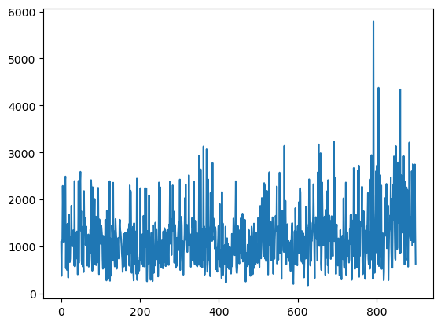

from fastcore.all import *
import numpy as np
import torch
import random
import timefrom torch import nn, optimimport torch.nn.functional as Fimport numpy as np
import random
class Game2048:
def __init__(self):
self.size = 4
self.score = 0
self.board = np.zeros((self.size, self.size), dtype=int)
self.add_new_tile()
self.add_new_tile()
self.nomove = False
def add_new_tile(self):
empty_tiles = list(zip(*np.where(self.board == 0)))
if empty_tiles:
x, y = random.choice(empty_tiles)
self.board[x][y] = 2 if random.random() < 0.9 else 4
def move(self, direction):
self.nomove = False
prev_board = self.board.copy()
if direction == 'down':
self.board = np.rot90(self.board, -1)
self._move_left()
self.board = np.rot90(self.board)
elif direction == 'up':
self.board = np.rot90(self.board, 1)
self._move_left()
self.board = np.rot90(self.board, -1)
elif direction == 'left':
self._move_left()
elif direction == 'right':
self.board = np.fliplr(self.board)
self._move_left()
self.board = np.fliplr(self.board)
self.nomove = np.abs(self.board - prev_board).sum()==0
if self.nomove: return
self.add_new_tile()
def _move_left(self):
self.reward = 0
new_board = np.zeros((self.size, self.size), dtype=int)
for i in range(self.size):
row = self.board[i][self.board[i] != 0]
new_row = []
skip = False
for j in range(len(row)):
if skip:
skip = False
continue
if j + 1 < len(row) and row[j] == row[j + 1]:
new_row.append(row[j] * 2)
self.score += row[j]*2
self.reward += row[j]*2
skip = True
else:
new_row.append(row[j])
new_board[i, :len(new_row)] = new_row
self.board[:] = new_board
def is_game_over(self):
if not np.any(self.board == 0):
for i in range(self.size):
for j in range(self.size - 1):
if self.board[i][j] == self.board[i][j + 1] or \
self.board[j][i] == self.board[j + 1][i]:
return False
return True
return False
game = Game2048()
print(game.board)[[0 0 0 0]
[2 0 0 0]
[0 0 0 0]
[0 0 0 2]]class ConvBlock(torch.nn.Module):
def __init__(self, input_dim, output_dim):
super(ConvBlock, self).__init__()
d = output_dim // 4
self.conv1 = nn.Conv2d(input_dim, d, 1, padding='same')
self.conv2 = nn.Conv2d(input_dim, d, 2, padding='same')
self.conv3 = nn.Conv2d(input_dim, d, 3, padding='same')
self.conv4 = nn.Conv2d(input_dim, d, 4, padding='same')
def forward(self, x):
x = x.to(device)
output1 = self.conv1(x)
output2 = self.conv2(x)
output3 = self.conv3(x)
output4 = self.conv4(x)
return torch.cat((output1, output2, output3, output4), dim=1)
class DQN(torch.nn.Module):
def __init__(self):
super(DQN, self).__init__()
self.conv1 = ConvBlock(16, 2048)
self.conv2 = ConvBlock(2048, 2048)
self.conv3 = ConvBlock(2048, 2048)
self.dense1 = nn.Linear(2048 * 16, 1024)
self.dense2 = nn.Linear(1024, 4)
def forward(self, x):
x = x.to(device)
x = F.relu(self.conv1(x))
x = F.relu(self.conv2(x))
x = F.relu(self.conv3(x))
x = nn.Flatten()(x)
x = F.dropout(self.dense1(x))
return self.dense2(x)def mse_loss(pred, goal):
return torch.mean((pred-goal)**2)def flatten(lst):
return torch.tensor(lst).view(1, 4, 4)
mapping = {2**i: i for i in range(1, 16)}
mapping[0] = 0
def get_state(game):
states = []
for move in ['down', 'left', 'up', 'right']:
new_game = Game2048()
new_game.board = game.board.copy()
new_game.move(move)
states.append(flatten([[mapping[int(item)] for item in row] for row in game.board]))
states.append(flatten([[mapping[int(item)] for item in row] for row in game.board]))
data = torch.stack(states, dim=1)
return F.one_hot(data, 16).view(1, 80, 4, 4).float()device= 'mps'
d = DQN()
d.to(device)
data = get_state(Game2048())game = Game2048()d(data)2.7 ms ± 758 μs per loop (mean ± std. dev. of 7 runs, 100 loops each)d(data)tensor([[-0.0463, 0.0449, -0.0162, -0.0287]], device='mps:0',
grad_fn=<LinearBackward0>)from IPython.display import *import matplotlib.pyplot as pltclear_output<function IPython.core.display_functions.clear_output(wait=False)>class ConvBlock(torch.nn.Module):
def __init__(self, input_dim, output_dim):
super(ConvBlock, self).__init__()
d = output_dim // 4
self.conv1 = nn.Conv2d(input_dim, d, 1, padding='same')
self.conv2 = nn.Conv2d(input_dim, d, 2, padding='same')
self.conv3 = nn.Conv2d(input_dim, d, 3, padding='same')
self.conv4 = nn.Conv2d(input_dim, d, 4, padding='same')
def forward(self, x):
x = x.to(device)
output1 = self.conv1(x)
output2 = self.conv2(x)
output3 = self.conv3(x)
output4 = self.conv4(x)
return torch.cat((output1, output2, output3, output4), dim=1)
class DQN(torch.nn.Module):
def __init__(self):
super(DQN, self).__init__()
self.conv1 = ConvBlock(80, 256)
self.conv2 = ConvBlock(256, 256)
self.conv3 = ConvBlock(256, 512)
self.dense1 = nn.Linear(512 * 16, 512)
self.dense2 = nn.Linear(512, 4)
def forward(self, x):
x = x.to(device)
x = F.relu(self.conv1(x))
x = F.relu(self.conv2(x))
x = F.relu(self.conv3(x))
x = nn.Flatten()(x)
x = F.dropout(self.dense1(x))
return self.dense2(x)class FullyConnectedQNetwork(nn.Module):
def __init__(self, nin=80, nout=4):
super().__init__()
self.model = nn.Sequential(
nn.Linear(nin, 192),
nn.ReLU(),
nn.Linear(192, 64),
nn.ReLU(),
nn.Linear(64, 64),
nn.ReLU(),
nn.Linear(64, nout)
)
def forward(self, x):
return self.model(x)Must implement experience replay
replay_memory = []
max_length = 10000device = 'mps'
episodes = 30
epsilons = np.geomspace(1, 0.01, episodes)
model = DQN()
model.to(device)
optimizer = optim.Adam(model.parameters(), lr=0.002)
gamma = 0.985
games_each_round = 50
avgs = []
stds = []
for epoch in range(episodes):
experience_pool = []
rewards = []
if epoch % 5 == 0:
experience_pool = experience_pool[5*batch_size:]
t0 = time.time()
for game_round in range(games_each_round):
t1 = time.time()
game = Game2048()
while not game.is_game_over():
state = get_state(game)
if np.random.rand() > epsilons[epoch]:
action = int(model(state).argmax())
else:
action = random.randint(0, 3)
game.move(['down', 'left', 'up', 'right'][action])
next_state = get_state(game)
if game.nomove:
reward = -20
else:
reward = game.reward
if not game.is_game_over():
replay_memory.append((state, action, reward, next_state))
assert state.shape[1]==80
"""
with torch.no_grad():
target = reward + gamma*model(next_state).max()*(not game.is_game_over())
experience_pool.append((state, action, target))
"""
avgs.append(game.score)
t2 = time.time()
clear_output(wait=True)
plt.plot(avgs)
plt.show()
batch_size = 8192
if len(replay_memory) <= batch_size*3:
continue
"""
if len(replay_memory) > max_length:
replay_memory.pop(0)
"""
pool = random.sample(replay_memory, batch_size)
states, actions, rewards, next_states = zip(*pool)
X = torch.stack(states)
X = X.squeeze(1)
N = torch.stack(next_states).squeeze(1)
y = torch.tensor(rewards, device=device) + gamma*model(N).max()
q_values = model(X)
try:
chosen_q_values = q_values.gather(1, torch.tensor(actions).unsqueeze(1).to(device))
except Exception:
import pdb; pdb.set_trace()
loss = mse_loss(chosen_q_values.squeeze(), y)
optimizer.zero_grad()
loss.backward()
optimizer.step()
--------------------------------------------------------------------------- KeyboardInterrupt Traceback (most recent call last) Cell In[145], line 23 21 state = get_state(game) 22 if np.random.rand() > epsilons[epoch]: ---> 23 action = int(model(state).argmax()) 24 else: 25 action = random.randint(0, 3) KeyboardInterrupt:
random.sample?Signature: random.sample(population, k, *, counts=None) Docstring: Chooses k unique random elements from a population sequence or set. Returns a new list containing elements from the population while leaving the original population unchanged. The resulting list is in selection order so that all sub-slices will also be valid random samples. This allows raffle winners (the sample) to be partitioned into grand prize and second place winners (the subslices). Members of the population need not be hashable or unique. If the population contains repeats, then each occurrence is a possible selection in the sample. Repeated elements can be specified one at a time or with the optional counts parameter. For example: sample(['red', 'blue'], counts=[4, 2], k=5) is equivalent to: sample(['red', 'red', 'red', 'red', 'blue', 'blue'], k=5) To choose a sample from a range of integers, use range() for the population argument. This is especially fast and space efficient for sampling from a large population: sample(range(10000000), 60) File: /opt/anaconda3/envs/deep/lib/python3.10/random.py Type: method